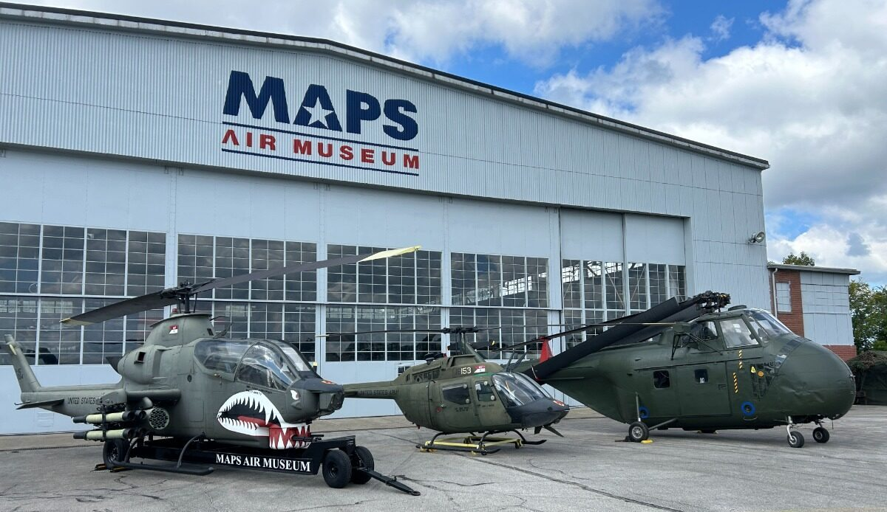
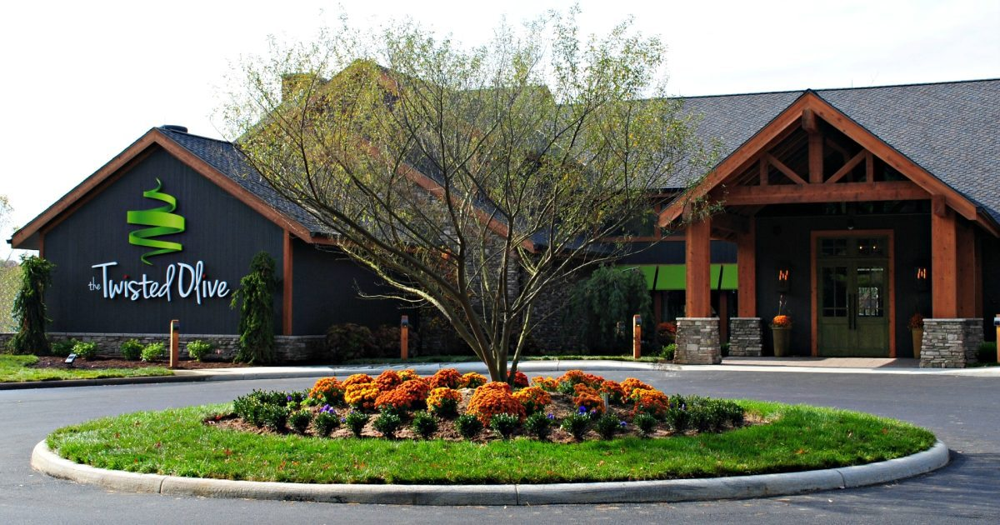
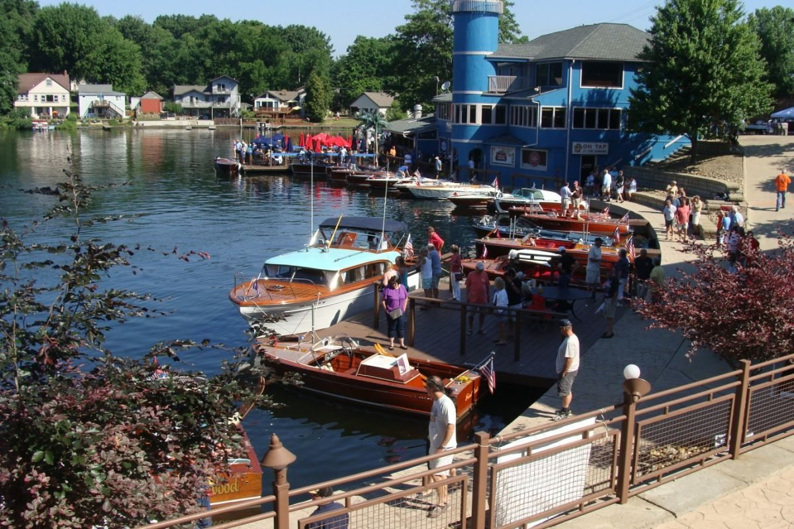

North Canton / Green Aviation history
MAPS Air Museum
See historic aircraft up close, explore aviation exhibits and learn the stories behind them. An engaging stop near Akron-Canton Airport.

YOUR NEIGHBORHOOD GUIDE
Comfort Inn & Suites Akron South
Explore Akron, Green and the Portage Lakes area, from aviation history to an afternoon outdoors.
Make a little room for discovery.
Landmarks, museums and memorable places in the area and beyond.

North Canton / Green Aviation history
See historic aircraft up close, explore aviation exhibits and learn the stories behind them. An engaging stop near Akron-Canton Airport.
Akron Family outing
Meet wildlife from around the world and explore habitats designed for an easy family day out. Check admission and seasonal experiences before visiting.
Downtown Akron Art & architecture
Explore modern and contemporary art, changing exhibitions and the museum’s striking architecture. Pair a gallery visit with a walk around downtown.
Canton History & science
Combine presidential history, local heritage and hands-on science in one visit. Check the museum’s current programs and planetarium schedule.
Explore dates, discover local events and plan your stay with our interactive calendar.
Explore the events calendar ↗Good food. Great company.
From a quick bite to a special evening, find a table that fits your plans.

Green Italian-American dining
Enjoy pizza, pasta and signature entrées in a scenic setting with several dining spaces. Check seasonal patio availability and reserve a table.
Green Scratch-made kitchen
A locally owned kitchen with made-from-scratch dishes, a dining room, patio and full-service bar. Browse the current menu and reservation options.
Green Neighborhood bistro
Plan a relaxed dinner at this locally owned bistro. Explore the current food and wine selections, and check availability before you go.
Portage Lakes Casual dining & beer
A casual stop for a meal and a drink around Portage Lakes. Check the current menu and what’s happening at the brew yard.
Stay a little. Explore a lot.
Fresh air, local shops and easy ways to make the most of your time here.

Portage Lakes Waterfront afternoons
Spend time by the water, discover lakeside dining and plan a boating or fishing outing. Check individual operators for seasonal availability and rentals.
Green Birding & paddling
Look for waterbirds, enjoy shoreline views or plan a paddle on the reservoir. Check current access notices and bring the equipment your outing needs.
Akron Trails & nature
Take a break outdoors with wooded trails, wetlands and picnic areas. Use the park map and current alerts to plan your visit.
Downtown Akron Downtown outings
Explore Akron’s downtown gathering place and its seasonal entertainment. Look up the current calendar for concerts, community events and winter activities.
A mix of nearby favorites and regional outings. Check venue websites for current hours, reservations, tickets and seasonal access before traveling. Photos show featured destinations; menus and experiences may change. Guide reviewed October 28, 2026.